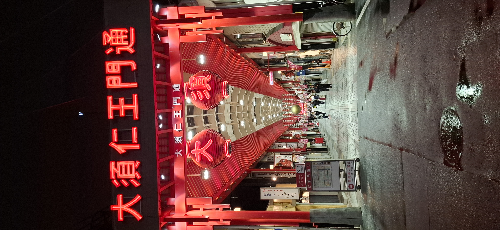
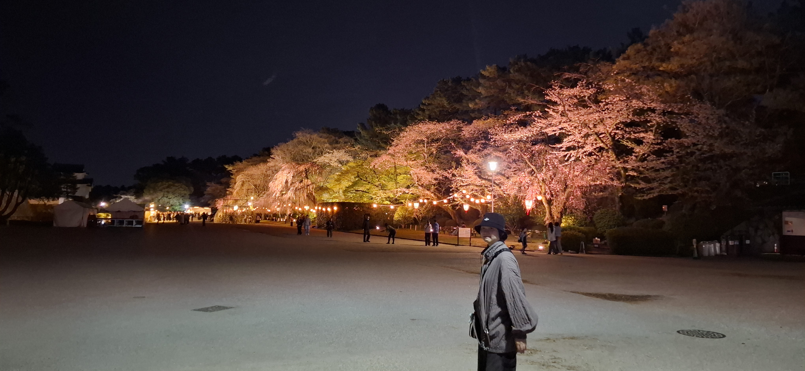

Our Journey
啟程，去吃居酒屋

鶴舞公園，漫天櫻雪
帶著野餐墊和抹茶點心，一早就前往名古屋最美的賞櫻勝地——鶴舞公園。 滿開的桜に包まれながら，我們鋪好墊子，靜靜地讓時間流過。 傍晚點燈後的夜櫻讓整座公園變成夢境，留下了整趟旅程最浪漫的畫面。

白鳥庭園與港口水族館
上午走進池泉迴遊式的白鳥庭園，枯山水的寧靜讓城市的喧囂暫時消失。 下午轉往名古屋港水族館，看著蔚藍水槽中的白鯨悠游， 妳說那個白鯨的表情好像在微笑，我說牠一定是看到妳才笑的。

大須觀音與味噌豬排
早上參觀豐田產業技術紀念館，那些轉動的齒輪和老式紡織機讓人大開眼界。 下午走進大須觀音與周邊商圈，複古街道和咖啡店讓妳流連忘返。 晚餐終於吃到正宗的名古屋味噌豬排，那個濃郁的赤味噌讓我們沉默了三分鐘。

德川園的武家庭園美學
德川園的楓樹與晚開的八重桜共存，展現了名古屋最沉穩的美。 德川美術館裡那件源氏物語繪卷真跡讓我們屏住呼吸—— 八百年前的人，也許也在春天和喜歡的人說了同樣的話。

MIRAI TOWER 與城市夜景
白天逛了榮區和名古屋電視塔旁的久屋大通公園， 傍晚登上中部電力 MIRAI TOWER，整座名古屋在夕陽染紅的光裡展開。 妳說妳從來沒有從這麼高的地方看過一座城市，我說我只看妳。

最後一個早晨，然後回家
最後一天的早晨，我們在飯店旁的小咖啡館吃了最後一頓日式早餐。 買了伴手禮，坐上電車往機場，窗外的風景快速後退—— 名古屋，謝謝你。我們一定會再回來的。